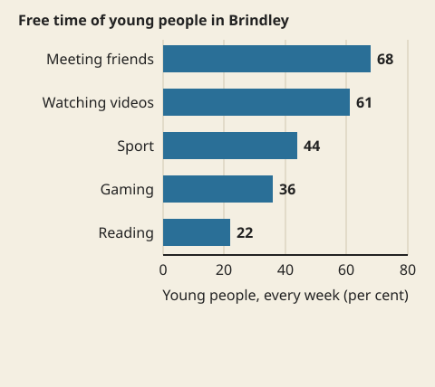

Diagramme beschreiben
Mit einem KI-Tutor lernen
Ein KI-Tutor erklärt dir diese Seite und hilft dir bei den Aufgaben. Wähl deinen Assistenten:
Mit Claude öffnen Mit ChatGPT öffnen Mit Mistral Vibe öffnen
Du nutzt dein eigenes Konto beim Anbieter. Der Assistent ist kein Angebot von lernapps.net: lernapps liefert nur Inhalte und Aufgaben. Die Wahl gilt für alle Seiten, nur auf diesem Gerät.
Worum es geht
In Zeitungen stehen oft Diagramme (charts) neben dem Text. Du kennst schon Vergleiche und große Zahlen. Danach kannst du ein Diagramm oder eine Statistik beschreiben und die wichtigste Entwicklung benennen.
Aufgabe
Lösung
Alle zwölf Zahlen der Reihe nach
Wer Zahl für Zahl vorliest, beschreibt nichts. Die Zuhörer müssen selbst herausfinden, was wichtig ist.
Was das Diagramm zeigt und welche Entwicklung am wichtigsten ist richtige Antwort
Zuerst Thema und wichtigste Entwicklung, danach stützen ein paar Zahlen die Aussage.
Welche Farbe die Linie hat
Die Farbe sagt nichts über die Daten. Sie gehört nur zum Aussehen.
Eine Beschreibung nennt die wichtigste Entwicklung und stützt sie mit wenigen Zahlen.
Lesestück · Freizeit und Bibliothek in Brindley
Lies den Artikel in drei Abschnitten. Zu jedem der ersten beiden gehört ein Diagramm. Die Zahlen vor den Zeilen brauchst du bei den Aufgaben. Schwere Wörter stehen hier.
| Englisch | Deutsch |
|---|---|
| tick | ankreuzen |
| youth council | der Jugendrat |
| figure | die Zahl, der Wert |
| librarian | die Bibliothekarin, der Bibliothekar |
| limit | die Grenze |
| for pleasure | zum Vergnügen |
| video | das Video |
- How young people in Brindley spend their free time
- A new survey by Brindley Youth Council asked 900 young people between 13 and 18 how they spend their free time. The survey ran in schools and youth clubs for two weeks, and every young person could tick as many activities as they liked.
- Meeting friends came first: 68 per cent said that they meet friends at least once a week. Watching videos was close behind with 61 per cent. Sport followed with 44 per cent, and 36 per cent said that they play computer games (gaming). Reading came last, but still 22 per cent read for pleasure every week.
- The youth council says that sport is twice as popular as reading and that fewer than one in four young people read for pleasure every week. In other words, a young person in Brindley is more likely to do sport than to open a book.

© CC-BY-4.0Achte auf die Länge der Balken und auf die Skala unten. Die Balken zeigen, wie viel Prozent der Jugendlichen eine Tätigkeit jede Woche ausüben.
Aufgabe
Lösung
Die Jugendlichen konnten mehrere Tätigkeiten ankreuzen richtige Antwort
In Zeile 2 steht, dass jede Person so viele Tätigkeiten ankreuzen konnte, wie sie wollte. Darum zählt jede Tätigkeit für sich.
Der Artikel hat sich verrechnet
Die Zahlen stimmen. Sie beziehen sich bei jeder Tätigkeit auf alle 900 Jugendlichen, nicht aufeinander.
Manche Jugendliche haben den Fragebogen zweimal ausgefüllt
Davon steht in Zeile 2 nichts. Jede Person hat einmal geantwortet.
Wenn man mehrere Antworten ankreuzen darf, ergeben die Prozente zusammen mehr als hundert.
- The library counts its visits every year. In 2019 there were 180,000 visits. In 2020 the number fell to 95,000, because the library was closed for several months. Since then it has risen every year and reached 215,000 in 2024, the highest figure in those six years.
- The head librarian explains the rise with the new homework club and the longer opening hours. “Visits are now 19 per cent higher than in 2019,” she said. “Libraries still matter to young people.” She adds that the homework club meets twice a week and that the number of young members has grown.
 © CC-BY-4.0
© CC-BY-4.0Folge der Linie von links nach rechts. Wo steigt sie, wo fällt sie, wo liegt der höchste Punkt?
Aufgabe
Lösung
Zeile 3
Zeile 3 berichtet über die Umfrage und die Freizeit, nicht über die Bibliothek.
Zeile 5 richtige Antwort
In Zeile 5 steht, dass die Besuche 2020 auf den tiefsten Wert fielen, weil die Bibliothek geschlossen war.
Zeile 6
Zeile 6 nennt den Grund für den Anstieg und ein Zitat. Der niedrigste Wert steht dort nicht.
Zeile 5 nennt die Jahreszahlen und die Besuche. Der niedrigste Wert stand 2020.
- Every survey has limits. Only young people who went to a school or a youth club took part, and the survey does not say how much time they spend on each activity. The youth council wants to ask the same questions again in two years. Then it can compare the figures with today’s results.
Offene Aufgabe
Welches Ergebnis der Umfrage überrascht dich, und warum? Schreibe zwei bis drei Sätze auf Englisch.
Eine gute Antwort enthält:
- Du nennst ein Ergebnis aus dem Artikel, zum Beispiel eine Tätigkeit oder eine Zahl. Nachlesen
- Du gibst einen Grund mit because. (Form)
- Du schreibst in ganzen Sätzen. (Form)
Lösung
I am surprised that gaming is not more popular than sport. I thought that more young people play computer games because it is easy to do at home. Die App bewertet deinen Text nicht. Vergleiche ihn mit den Punkten.
So beschreibst du ein Diagramm
Eine Beschreibung hat drei Teile. In der Einleitung sagst du, was das Diagramm zeigt: Thema, Zeit und Einheit. Im Hauptteil nennst du die wichtigste Entwicklung oder den größten Unterschied und stützt sie mit zwei oder drei Zahlen. Im Schluss ziehst du in einem Satz Bilanz. Lies nie alle Zahlen der Reihe nach vor.
Redemittel für den Hauptteil:
- Entwicklung: rose, fell, stayed the same
- Der Unterschied: rose by …, fell by …
- Der neue Wert: rose to …, fell to …, rose from … to …
- Der höchste und der niedrigste Wert: the highest, the lowest
- Vergleich: more than, fewer than, twice as many as, half as many as, twice as popular as, half as popular as
Merke
By nennt den Unterschied, to den neuen Wert: The price rose by two pounds, to eight pounds. Nach twice as many steht as: There are twice as many cars as bikes. Bei Adjektiven ist es genauso: Tea is half as popular as coffee.
Übung
Aufgabe
Lösung
Gaming is the fourth most popular activity richtige Antwort
Drei Balken sind länger als der von Gaming, ein Balken ist kürzer.
Gaming is the most popular activity
Der längste Balken gehört zu einer anderen Tätigkeit. Gaming liegt im unteren Bereich, an vierter Stelle von fünf.
Gaming is as popular as sport
Der Balken von Sport ist länger als der von Gaming, die Werte sind nicht gleich.
Gaming is less popular than reading
Der Balken von Reading ist der kürzeste. Gaming ist beliebter als Reading.
Gaming steht an vierter Stelle, hinter drei längeren Balken.
Aufgabe
Lösung
In 2019 there were 180,000 visits, in 2020 there were 95,000 visits, in 2021 there were 120,000 visits
Das liest nur die Zahlen vor. Die Entwicklung, also fallen und danach steigen, steht nicht da.
Visits fell in 2020 but rose every year after that richtige Antwort
Der Satz nennt die Entwicklung: erst ein Fall, danach jedes Jahr ein Anstieg.
The chart shows the library
Das nennt nur das Thema. Eine Beschreibung sagt auch, was sich verändert.
Eine gute Beschreibung benennt zuerst die Entwicklung und stützt sie danach mit Zahlen.
Aufgabe
Lösung
Richtige Antwort: Visits fell to their lowest level. – 2020; Visits rose for the first time after the fall. – 2021; There were 180,000 visits. – 2019; Visits reached the highest level. – 2024
Die Linie fällt 2020 am tiefsten, steigt ab 2021 und erreicht 2024 den höchsten Punkt. 2019 war der Wert 180,000.
Aufgabe
Setze by, to oder from ein. Die Zahlen stehen im Liniendiagramm.
© CC-BY-4.0Die Besuche der Bibliothek in Tausend.
Tipp
Sage dir: Nennt die Zahl den Unterschied oder den neuen Wert?
- Die Besuche stiegen 2023 um 30,000. → Visits rose … 30,000 in 2023.
- Die Besuche fielen 2020 auf 95,000. → Visits fell … 95,000 in 2020.
- Die Besuche stiegen von 120,000 auf 160,000. → Visits rose … 120,000 to 160,000 between 2021 and 2022.
Lösung
- Visits rose by 30,000 in 2023.
- Visits fell to 95,000 in 2020.
- Visits rose from 120,000 to 160,000 between 2021 and 2022.
By nennt den Unterschied, to den neuen Wert. Mit from … to … nennst du beide Werte.
Aufgabe
Schreibe die Aussage zum Diagramm aus den Stichwörtern.
Tipp
Denke an by und to. Beim Vergleich brauchst du zweimal as.
- visits / fall / by 85,000 / from 2019 to 2020
- reading / half as popular / sport
- visits / rise / to 160,000 / in 2022
Lösung
- Visits fell by 85,000 from 2019 to 2020. (auch richtig: Visits fell by 85,000 between 2019 and 2020.; Visits fell by 85,000 in 2020.; Visits went down by 85,000 from 2019 to 2020.; Visits went down by 85,000 between 2019 and 2020.; Visits went down by 85,000 in 2020.; Visits dropped by 85,000 from 2019 to 2020.; Visits dropped by 85,000 between 2019 and 2020.; Visits dropped by 85,000 in 2020.; Visits decreased by 85,000 from 2019 to 2020.; Visits decreased by 85,000 between 2019 and 2020.; Visits decreased by 85,000 in 2020.)
- Reading is half as popular as sport.
- Visits rose to 160,000 in 2022. (auch richtig: Visits went up to 160,000 in 2022.; Visits increased to 160,000 in 2022.)
Mit by nennst du den Unterschied, mit to den Wert. Bei Vergleichen mit half oder twice brauchst du zweimal as.
Aufgabe
Höre den Satz und schreibe ihn auf.
- KI
- KI
- KI
Lösung
- The bars show the results of the survey.
- The line drops at the start and then climbs steadily.
- Reading is much less popular than watching videos.
Die Sätze beschreiben, was ein Diagramm zeigt.
Selbst schreiben
Aufgabe
Höre die Sätze und sprich sie nach. So beginnst du eine Beschreibung.
- Let me describe the chart in a few sentences.KI
- The number fell in one year and then rose again.KI
- This chart is easy to understand.KI
Zum Aufnehmen braucht diese Aufgabe JavaScript. Die Beispiele kannst du auch ohne anhören.
Lösung
- Let me describe the chart in a few sentences.
- The number fell in one year and then rose again.
- This chart is easy to understand.
Das Balkendiagramm zur Freizeit, für die letzte Aufgabe.
Offene Aufgabe
Beschreibe das Balkendiagramm in vier bis sechs Sätzen auf Englisch.
Eine gute Antwort enthält:
- Die Einleitung sagt, was das Diagramm zeigt, mit Thema und Einheit. Nachlesen
- Du nennst den größten Unterschied oder die wichtigste Aussage, zum Beispiel den höchsten und den niedrigsten Wert. Nachlesen
- Du nennst zwei oder drei Zahlen aus dem Diagramm und vergleichst, zum Beispiel mit more than oder fewer than. (Form)
- Du liest nicht alle Zahlen der Reihe nach vor. (Form)
Lösung
The chart shows how 900 young people in Brindley spend their free time. The most popular activity is meeting friends at 68 per cent, and the least popular is reading with 22 per cent. More young people watch videos than play computer games, and fewer young people play computer games than do sport. In short, young people spend most of their free time with friends. Die App bewertet deinen Text nicht. Vergleiche ihn mit den Punkten.
Wie es weitergeht
Du kannst jetzt Zeitungen und Statistiken lesen. Probiere es bei der nächsten Nachricht aus: Schau auf den lead, auf Quelle und Datum und auf die Zahlen im Diagramm.
Fehler gefunden oder eine Idee für diese App?